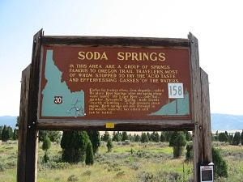

Soda Springs, Idaho
Weather Summary
Upcoming Events
5 Day Forecast
From Beer Springs to Soda Springs
It was a pit stop for Oregon Trail pioneers and fur traders while traveling through Eastern Idaho. Often referred to as the 'Oregon Trail Oasis,' it's now known as Soda Springs, a town of just over 3,000 people in Caribou County.
As one of the main water sites along the Oregon Trail, travelers would often stop to try the water at the sulfurous springs, which bubbles like boiling water on the surface and emits a destructive, rotten egg smell when the wind is blowing just right.
Fur traders first referred to the area as 'Beer Springs' after tasting the water and reportedly said that one of the springs "tasted like beer... flat beer."
Today, Beer Springs is now known as Hooper Springs, named after W.H. Hooper, Salt Lake City's leading banker at the time, and the Utah delegate to Congress.
Hooper had a summer home in the area and would often visit Beer Springs and eventually produced a national marketing campaign for Soda Springs water in the 1880s.
Sparkling soda water is still free for visitors to drink at the Soda Springs city park.
In 1937, Soda Springs gained notoriety once again. While drilling a hole over 300 feet into the ground in search of hot water for a bathhouse, crews instead unleashed what is now known as The Geyser.
Today, it remains as the only regulated, man-made geyser in the world, releasing water up to 100 feet in the air every hour on the hour.
Source: KTVB